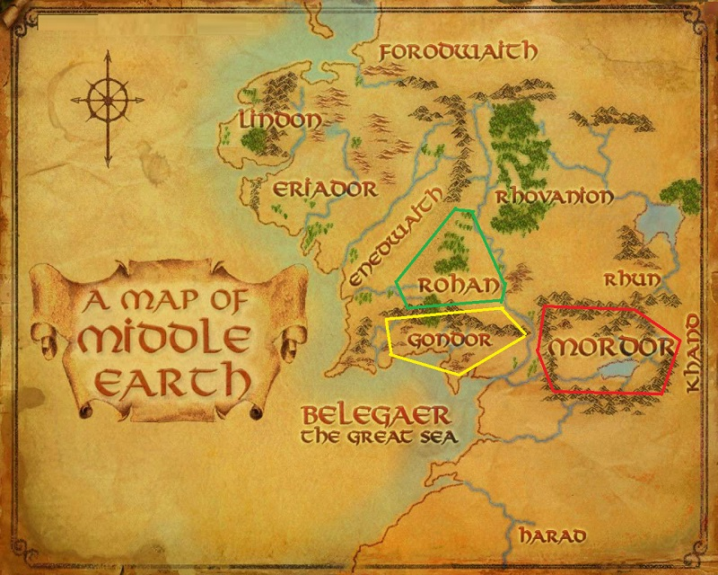

|
Middle-earth is a large continent, a mass of land that occupies the central regions of Arda. It lays between two continents; Aman,
the uttermost West from which it is separated by the ocean Belegaer, and the Land of the Sun, at the uttermost East which the East Sea
separates.
The Westlands are the most well-known regions of the continent, and the only which have been mapped in great detail.
Of the Westlands, the western portion called Beleriand was drowned at the end of the First Age and survivors relocated to Lindon
and Eriador from which it was separated by the Blue Mountains. Another region of the Westlands was Rhovanion separated by the
Misty Mountains. The southern part of the Westlands was around a large bay, including Belfalas, the area of Gondor, and
Near Harad (Near South). In the years before their decline, the kingdoms of Arnor and Gondor dominated the Westlands during
the Third Age. These realms were separated by great mountain ranges such as the White Mountains and the Misty Mountains.
Of the East and South of Middle-earth not much is known, other than the names of Rhûn and Khand, east of Mordor, and the
Far Harad (Far South); but how far they extended is unknown.
In the Elder Days, the two large inland seas of Helcar and Ringil,created by the demise of the Two Lamps, stood in the center of
Middle-earth to the north and south. Another known name of the East was the Empty Lands. Through the north-east of Middle-earth ran
the Red Mountains, and to the south-east the
Yellow Mountains, which mirrored the Blue Mountains and the Grey Mountains of the north-west and south-west respectively.
On the shores of the Sea of Helcar near to the Red Mountains was Cuiviénen, the cradle of the Elves. In the far east between
the Red Mountains and the Yellow Mountains there were the Mountains of the Wind, and between these mountains and the easternmost
shores of Middle-earth there stood Hildórien, the cradle of Men. There was also a mythical Last Desert in the "East of East",
but its status or existence in the later years was unknown.
|

|